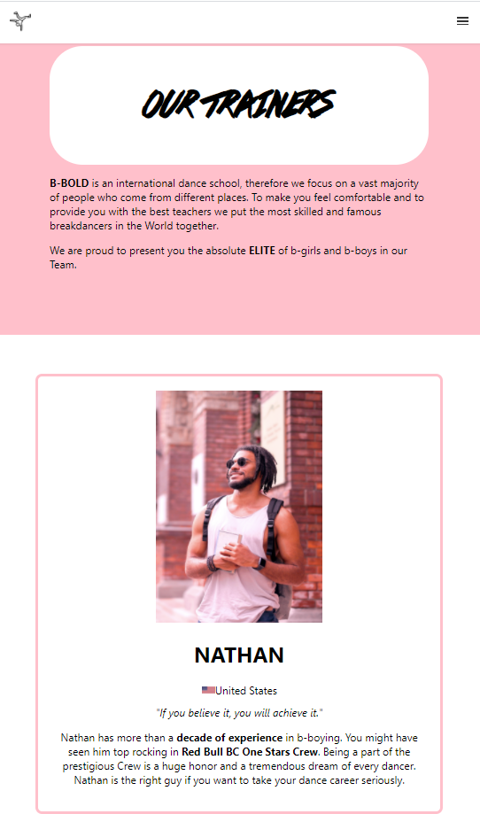
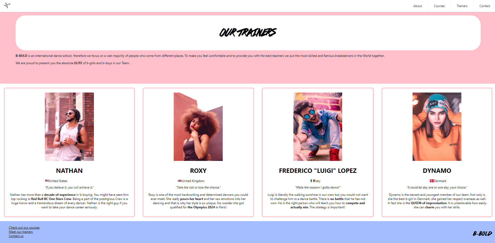

Two different dancing schools.
This was a project focused on the design process, cooperation, and producing a website for a fictitious dancing school that targets a specific user segment.
Our 1st dancing school was focused on Breakdance. At first, we did a lot of research about breakdance in general and later on, we had a few interviews with breakdancers. During this project, we got introduced to the design thinking process and personas and they both made our process much easier. By the end of the 2 weeks, we had to hand over our project to another group.
This time we were creating a mobile-first website for the first time. After creating a bunch of sketches and wireframes we agreed to put a video on the home page as we are creating a website for a dancing school – it needed a movement. In the pictures you can see our HOME PAGE and the site that I was in charge of - TRAINERS. We used mainly the colors of white, black, pink – as it is a color of joy, sympathy, it is friendly and feminine (implying that breakdance is not exclusive only for boys), light blue – a color of friendliness and responsibility.
In the section TRAINERS you can see the teachers the dancing schools offers. Through this page you can get to know them a little bit better; it shows their nation, their persona, photo, and their achievements.
We exchanged our projects and this time we got a Bollywood dancing school. We had to redesign and
elaborate on their work. In the first picture, you can see the HOME PAGE of the website we were
given and the one we created ourselves.
Immediately, we did user testing and found out many bugs that we fixed e.g. no burger menu, not clickable logo,
website was not responsive.
We also created a new moodboard and
changed their initial design.
After research and interviews with Bollywood dancers and Indians, we concluded that they think the website is too stereotypical. Therefore we changed the content and kept the design elegant with a yellowish feeling to it.